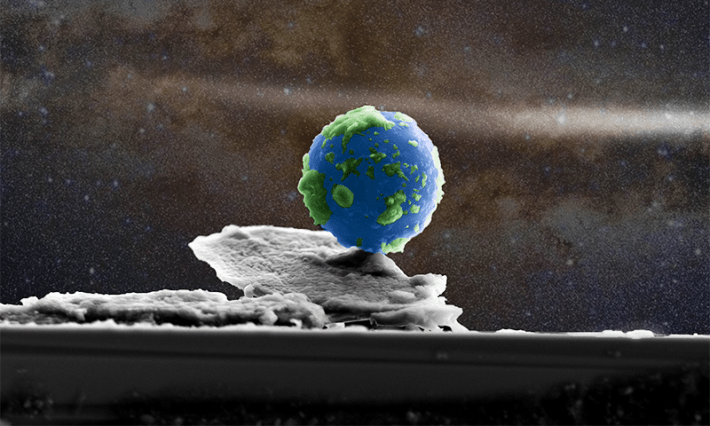
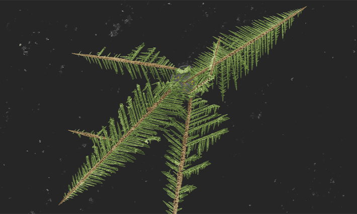
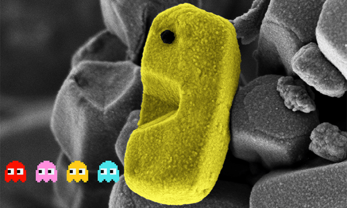
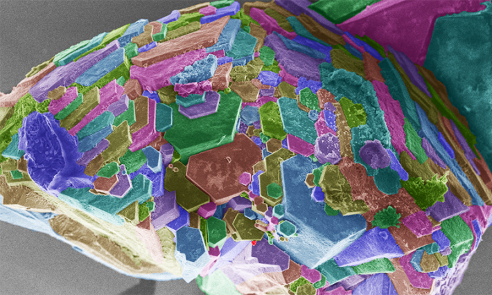

The 2025 Nobel Prize in Chemistry recognized a revolutionary group of materials called metal-organic frameworks, which were used to make the “PAC-MOF” and “Rainbow Fish” structures captured in images below.
In recent decades, scientists have increasingly zoomed in on tiny technologies in their labs. This wee world of nanoscale research involves manipulating materials measuring just a billionth of a meter, and has led to myriad breakthroughs: super-efficient water purification systems, next-generation solar panels, and ultra lightweight tennis rackets. Researchers in this field are also working on futuristic quantum materials, solar energy-capturing clothing, and drug-delivering robots.
To celebrate some of these mini marvels, Northwestern University's Atomic and Nanoscale Characterization Experimental Center (NUANCE) holds an annual “Art of Science” image contest, which is accepting the public’s votes until September 28.
“When you can take what you’ve learned through your scientific analysis and turn it into an approachable piece of artwork with excellent color, composition, and lighting, the science jumps off the page and turns into something that anyone—not only researchers—can enjoy and appreciate,” says Nicholas Gogola, a microscopist at the NUANCE Center.
Here are some stunning submissions from the contest, which were snapped with a microscope that shoots out beams of electrons:
“NanoEarth”

Credit: Nicholas Gogola
At first glance, this may appear to be a space snapshot—but it’s actually a cross-section view of a film of plastic material called polylactic acid (PLA). The film is topped with a PLA particle digitally enhanced to look like our planet. PLA is often made from fermented plant starches, including cassava, sugarcane, or corn. Tiny, plate-like structures incorporated into thin films of PLA help scientists make these materials strong and durable, Gogola says, and they can be used for food packaging, drug delivery, and wound healing.
*“*NanoPines”****

Credit: Luis Fernando Ayala Cardona
Here, what looks like a handful of pine needles is an electrode on a glass wafer covered in nanoscale gold structures. The gold grew into these spiky configurations when stimulated by electricity. This type of device can be used to test blood and saliva samples, says Luis Fernando Ayala Cardona, a biomedical engineering PhD student at Northwestern University. Similar gold electrodes can be implanted in patients’ bodies to monitor their health, including detecting signs of inflammation.
“PAC-MOF”

Credit: Nicholas Gogola
Retro video game fans might recognize the icon depicted here on the nanoscale. A crystal forged from metal ions that are linked by organic molecules—known as a metal organic framework (MOF) material—has been edited to emphasize its resemblance to Pac-Man. These porous materials have promise for use in water purification and carbon capture, according to Gogola, among other applications.
“The Rainbow Fish”

Credit: Duaa Ansari
This image, which echoes a beloved children’s book character, also captures an MOF crystal with digitally added hues. The material in this image is made of the metal zirconium. MOFs are particularly helpful due to their repeating, cage-like structures and relatively roomy internal surface area, says Duaa Ansari, a chemistry PhD student at Northwestern University. Ansari designs MOF crystals to capture and break down chemical weapon compounds, which could protect members of the military in the field. 
Lead image: Nicholas Gogola
Källförteckning
- Originalartikel: https://nautil.us/a-nano-sized-art-gallery-1239123/